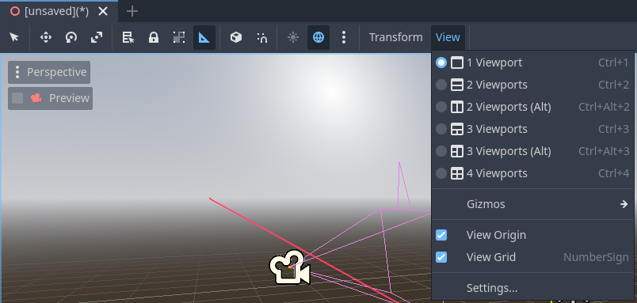
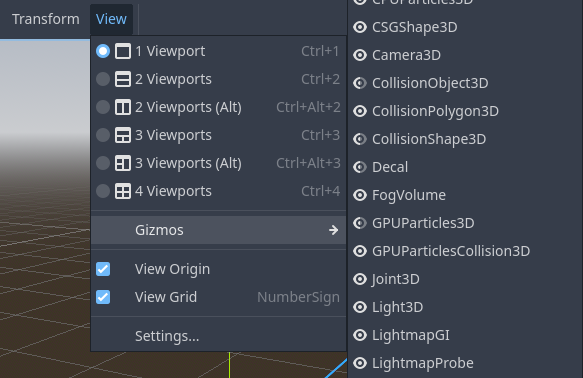
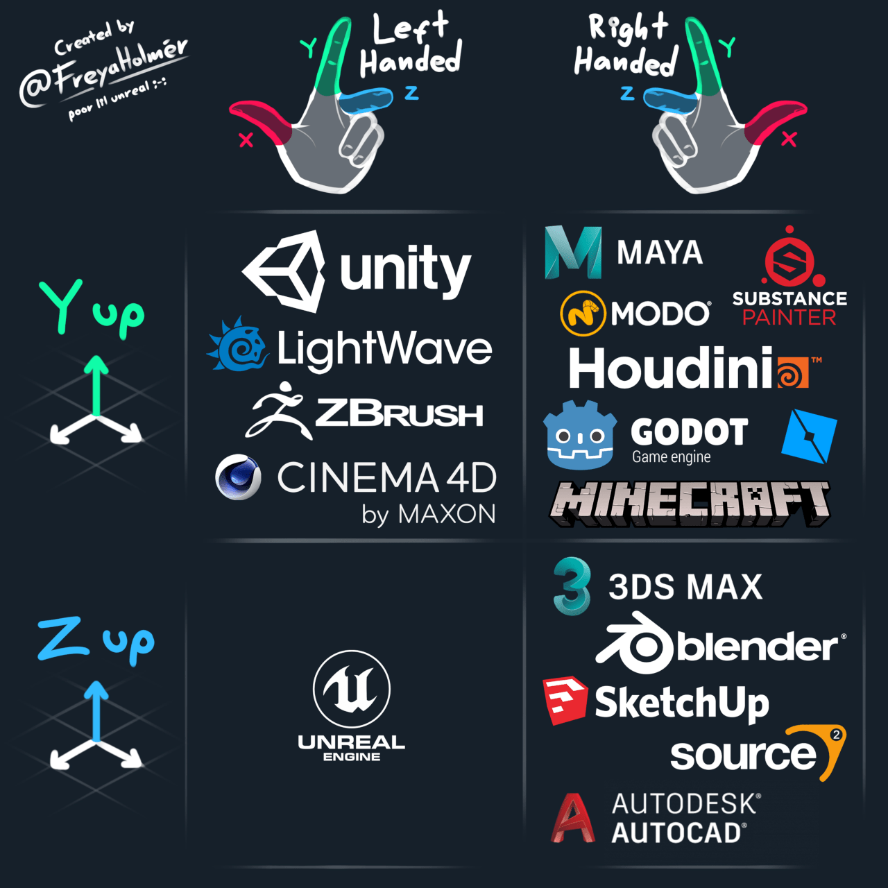
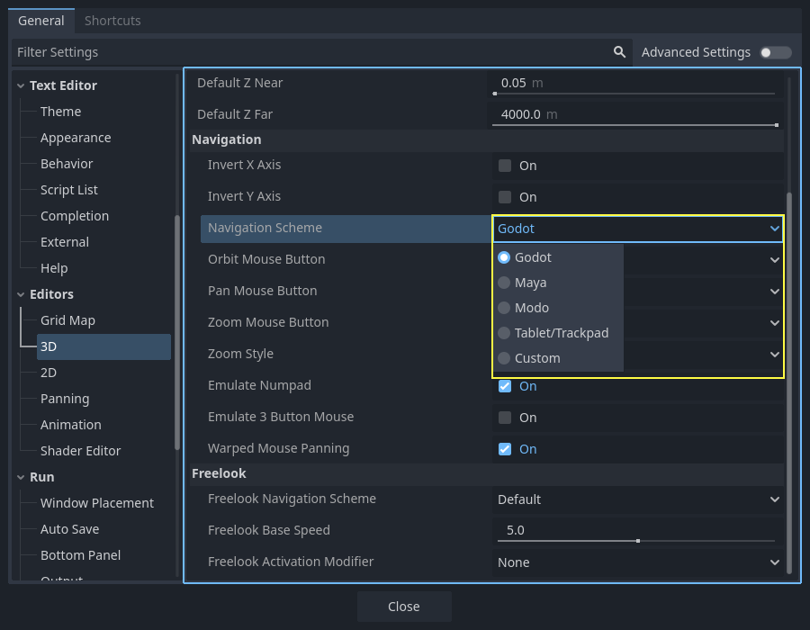
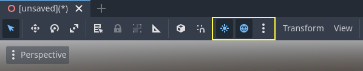
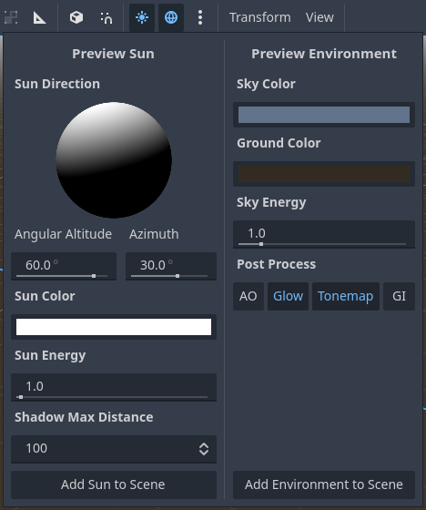
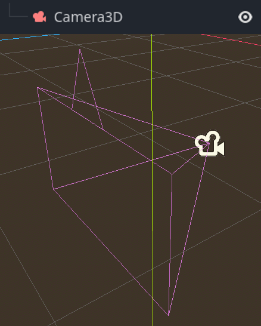
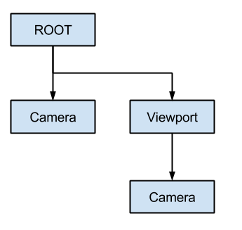

Giới thiệu về 3D
Làm một game 3D có thể đầy thử thách. Tọa độ Z bổ sung khiến nhiều kỹ thuật phổ biến từng giúp làm game 2D đơn giản hơn không còn hoạt động. Để hỗ trợ quá trình chuyển đổi này, cần nói rằng Godot dùng các API tương tự nhau cho 2D và 3D. Hầu hết các node đều giống nhau và có mặt ở cả phiên bản 2D và 3D. Thực tế, bạn nên xem qua bài hướng dẫn game đi cảnh 3D, hoặc các bài hướng dẫn nhân vật kinematic 3D, vốn gần như giống hệt các phiên bản 2D tương ứng.

Bản demo Godot Third Person Shooter (TPS), có trên kho Github hoặc Asset Library.
Trong 3D, toán học phức tạp hơn một chút so với 2D. Để có phần giới thiệu về toán học liên quan, được viết cho lập trình viên game chứ không phải nhà toán học hay kỹ sư, hãy xem Toán vector và Sử dụng transform 3D.
Không gian làm việc 3D
Việc chỉnh sửa scene 3D được thực hiện trong không gian làm việc 3D. Không gian làm việc này có thể được chọn thủ công, nhưng nó sẽ tự động được chọn khi một node Node3D được chọn.

Tương tự 2D, các tab bên dưới bộ chọn không gian làm việc được dùng để chuyển giữa các scene đang mở hoặc tạo scene mới bằng nút dấu cộng (+). Các dock bên trái và bên phải hẳn đã quen thuộc từ phần giới thiệu trình chỉnh sửa.
Bên dưới bộ chọn scene là thanh công cụ chính, và bên dưới thanh công cụ chính là viewport 3D.
Thanh công cụ chính
Một số nút trên thanh công cụ chính giống với các nút trong không gian làm việc 2D. Một lời giải thích ngắn kèm phím tắt sẽ hiện ra nếu bạn rê con trỏ chuột lên một nút trong một giây. Một số nút có thể có thêm chức năng nếu nhấn thêm một phím khác. Dưới đây là tóm tắt chức năng chính của từng nút cùng phím tắt mặc định, theo thứ tự từ trái sang phải:
Transform Mode (Q): Bật chế độ kết hợp di chuyển + xoay cho các node được chọn.
Move Mode (W): Bật chế độ di chuyển (tịnh tiến) cho các node được chọn. Xem Không gian và gizmo thao tác để biết thêm chi tiết.
Rotate Mode (E): Bật chế độ xoay cho các node được chọn. Xem Không gian và gizmo thao tác để biết thêm chi tiết.
Scale Mode (R): Bật chế độ co giãn và hiển thị gizmo co giãn theo các trục khác nhau cho các node được chọn. Xem Không gian và gizmo thao tác để biết thêm chi tiết.
Select Mode (V): Cho phép chọn node trong viewport. Nhấp chuột trái vào một node để chọn nó. Nhấp chuột trái và kéo một hình chữ nhật sẽ chọn tất cả các node nằm trong ranh giới hình chữ nhật đó khi thả chuột. Giữ Shift khi chọn để thêm node vào vùng chọn. Nhấp vào một node đã chọn trong khi giữ Shift sẽ bỏ chọn node đó. Ở chế độ này, bạn có thể dùng các gizmo để di chuyển hoặc xoay.
Show the list of selectable nodes at the clicked position: Như mô tả, nút này cung cấp danh sách các node có thể chọn tại vị trí được nhấp dưới dạng menu ngữ cảnh, nếu có nhiều hơn một node trong vùng được nhấp.
Lock (Ctrl + L) các node được chọn, ngăn việc chọn và di chuyển chúng trong viewport. Nhấp lại vào nút (hoặc dùng Ctrl + Shift + L) sẽ mở khóa các node được chọn. Node bị khóa chỉ có thể được chọn trong cây scene. Có thể dễ dàng nhận ra chúng nhờ biểu tượng ổ khóa bên cạnh tên node trong cây scene. Nhấp vào ổ khóa này cũng sẽ mở khóa các node.
Group selected nodes (Ctrl + G). Tính năng này cho phép chọn node gốc nếu bất kỳ node con nào được chọn. Dùng Ctrl + G để bỏ nhóm chúng. Ngoài ra, nhấp vào nút bỏ nhóm trong cây scene cũng thực hiện cùng thao tác.
Ruler Mode (M): Khi bật, bạn có thể nhấp và kéo để đo khoảng cách trong scene theo mét.
Use Local Space (T): Nếu bật, gizmo của một node được vẽ theo góc xoay hiện tại của node thay vì theo các trục toàn cục của viewport.
Use Snap (Y): Nếu bật, thao tác di chuyển và xoay sẽ bám theo lưới. Cũng có thể tạm thời kích hoạt bám lưới bằng cách giữ Ctrl trong khi thực hiện thao tác. Các cài đặt để thay đổi tùy chọn bám lưới được giải thích bên dưới.
Use Trackball (U): Khi bật, kéo tâm của một node (được biểu thị bằng một đĩa sáng mờ) sẽ xoay node giống như một trackball vật lý.
Preserve Children Transform (P): Khi bật, việc biến đổi một node sẽ giữ nguyên transform toàn cục của các node con của nó.
Toggle preview sunlight: Nếu trong scene không có DirectionalLight3D nào, có thể dùng ánh nắng xem trước làm nguồn sáng. Xem Môi trường và ánh sáng xem trước để biết thêm chi tiết.
Toggle preview environment: Nếu trong scene không có WorldEnvironment nào, có thể dùng môi trường xem trước làm vật thay thế tạm thời. Xem Môi trường và ánh sáng xem trước để biết thêm chi tiết.
Edit Sun and Environment Settings (ba dấu chấm): Mở menu để cấu hình cài đặt ánh nắng và môi trường xem trước. Xem Môi trường và ánh sáng xem trước để biết thêm chi tiết.
Menu Transform: Có ba tùy chọn:
Snap Object to Floor: Đặt vật thể bám xuống một mặt sàn rắn.
Transform Dialog: Mở hộp thoại để điều chỉnh thủ công các tham số transform (tịnh tiến, xoay, co giãn và transform).
Snap Settings: Cho phép bạn thay đổi các cài đặt bám transform, bám xoay (theo độ) và bám co giãn (theo phần trăm).
Menu View: Điều khiển các tùy chọn hiển thị và bật thêm viewport:

Trong menu này, bạn cũng có thể hiện/ẩn lưới, mặc định có kích thước 1x1 mét, và gốc tọa độ, nơi các đường trục màu lam, lục và đỏ giao nhau. Hơn nữa, có thể bật/tắt từng loại gizmo cụ thể trong menu này.

Con mắt mở nghĩa là gizmo đang hiển thị, con mắt nhắm nghĩa là gizmo bị ẩn. Con mắt mở hé nghĩa là gizmo còn hiển thị xuyên qua các bề mặt đục.
Nhấp vào Settings trong menu View này sẽ mở một cửa sổ để thay đổi tham số Vertical Field of View (VFOV) (theo độ), cùng các giá trị Z-Near và Z-Far.
Bên cạnh menu View, có thể có thêm các nút khác. Trong ảnh thanh công cụ ở đầu chương này, xuất hiện thêm nút Mesh vì một MeshInstance3D đang được chọn. Menu này cung cấp một số thao tác nhanh hoặc công cụ để làm việc với một node hoặc vùng chọn cụ thể.
Hệ tọa độ
Godot dùng hệ mét cho mọi thứ trong 3D, với 1 đơn vị bằng 1 mét. Vật lý và các phần khác được tinh chỉnh cho tỷ lệ này. Vì vậy, cố dùng một tỷ lệ khác thường là ý tưởng tồi (trừ khi bạn biết mình đang làm gì).
Khi làm việc với asset 3D, tốt nhất là luôn làm việc ở đúng tỷ lệ (đặt đơn vị thành hệ mét trong phần mềm dựng hình 3D của bạn). Godot cho phép co giãn sau khi import, và dù cách này hoạt động trong hầu hết trường hợp, trong một số tình huống hiếm hoi nó có thể gây ra vấn đề về độ chính xác dấu phẩy động (và do đó gây lỗi hoặc lỗi hiển thị) ở những phần nhạy cảm như kết xuất hay vật lý. Hãy đảm bảo các họa sĩ của bạn luôn làm việc ở đúng tỷ lệ!
Tọa độ Y được dùng cho hướng "lên". Với các trục ngang X/Z, Godot dùng hệ tọa độ tay phải. Điều này có nghĩa là với hầu hết các vật thể cần căn hướng (như đèn hoặc camera), trục Z được dùng làm hướng "chỉ về phía". Quy ước này đại khái có nghĩa là:
X là hai bên
Y là lên/xuống
Z là trước/sau
Xem biểu đồ này để so sánh với các phần mềm 3D khác:

Hình ảnh của Freya Holmér
Không gian và gizmo thao tác
Việc di chuyển, xoay và co giãn vật thể trong khung nhìn 3D được thực hiện thông qua các gizmo thao tác. Mỗi trục được biểu diễn bằng một màu: Đỏ, Lục, Lam lần lượt tương ứng với X, Y, Z. Quy ước này cũng áp dụng cho lưới và các gizmo khác (và cả cho ngôn ngữ shader, thứ tự các thành phần của Vector3, Color, v.v.).

Một số phím tắt hữu ích:
Để bám vị trí hoặc góc xoay, hãy nhấn Ctrl trong khi di chuyển, co giãn hoặc xoay.
Để căn khung nhìn vào giữa vật thể được chọn, hãy nhấn F.
Trong viewport, có thể nhấp và giữ các mũi tên để di chuyển vật thể theo một trục. Có thể nhấp và giữ các cung tròn để xoay vật thể. Để khóa một trục và di chuyển vật thể tự do theo hai trục còn lại, có thể nhấp, giữ và kéo các hình chữ nhật có màu.
Nếu chế độ transform được đổi từ Select Mode sang Scale Mode, các mũi tên sẽ được thay bằng các khối lập phương, có thể kéo để co giãn vật thể giống như khi di chuyển vật thể.
Điều hướng trong môi trường 3D
Trong môi trường 3D, việc điều chỉnh điểm nhìn hoặc góc nhìn scene thường rất quan trọng. Trong Godot, việc điều hướng môi trường 3D trong viewport (hay trình chỉnh sửa không gian) có thể thực hiện theo nhiều cách.
Các điều khiển điều hướng scene 3D mặc định tương tự Blender (nhằm tạo sự nhất quán nhất định trong quy trình phần mềm tự do), nhưng Editor Settings cũng có các tùy chọn để tùy chỉnh nút chuột và hành vi cho giống các công cụ khác. Để đổi điều khiển sang kiểu Maya hoặc Modo, bạn có thể vào Editor Settings > Editors > 3D. Sau đó, trong mục Navigation, tìm Navigation Scheme.

Với cài đặt mặc định, các phím tắt sau điều khiển cách điều hướng trong viewport:
Nhấn chuột giữa và kéo chuột cho phép bạn xoay quanh tâm của những gì đang hiển thị trên màn hình.
Bạn cũng có thể nhấp và giữ chuột trái vào gizmo thao tác ở góc trên bên phải viewport để xoay quanh tâm:

Nhấp chuột trái vào một trong các vòng tròn màu sẽ đặt khung nhìn theo hướng trực giao đã chọn, và menu View của viewport sẽ được cập nhật tương ứng.

Nếu khung nhìn Perspective được bật trên viewport (xem được trong menu View của viewport, không phải menu View trên thanh công cụ chính), giữ chuột phải trên viewport hoặc nhấn Shift + F sẽ chuyển sang chế độ "nhìn tự do" (free-look). Ở chế độ này, bạn có thể di chuyển chuột để nhìn xung quanh, dùng các phím W A S D để bay quanh khung nhìn, E để đi lên và Q để đi xuống. Để tắt chế độ này, hãy thả chuột phải hoặc nhấn lại Shift + F.
Trong chế độ nhìn tự do, bạn có thể tạm thời tăng tốc độ bay bằng Shift hoặc giảm bằng Alt. Để thay đổi và giữ nguyên hệ số tốc độ, dùng mouse wheel up hoặc mouse wheel down để lần lượt tăng hoặc giảm.
Ở chế độ trực giao, giữ chuột phải sẽ kéo dịch (pan) khung nhìn. Dùng Keypad 5 để chuyển đổi giữa khung nhìn phối cảnh và trực giao.
Dùng phím tắt transform kiểu Blender
Từ Godot 4.2, bạn có thể bật phím tắt kiểu Blender để tịnh tiến, xoay và co giãn node. Trong Blender, các phím tắt này là:
G để tịnh tiến
R để xoay
S để co giãn
Sau khi nhấn một phím tắt khi đang focus vào viewport của trình chỉnh sửa 3D, hãy di chuyển chuột hoặc nhập một số để di chuyển (các) node được chọn một lượng xác định theo đơn vị 3D. Bạn có thể giới hạn chuyển động theo một trục cụ thể bằng cách chỉ định trục bằng một chữ cái, sau đó là khoảng cách (nếu nhập giá trị bằng bàn phím).
Ví dụ, để di chuyển vùng chọn lên trên 2.5 đơn vị, hãy nhập chuỗi sau theo thứ tự (Y+ là hướng lên trong Godot):
G-Y-2-.-5-Enter
Để dùng phím tắt transform kiểu Blender trong Godot, vào tab Shortcuts của Editor Settings, rồi trong mục Spatial Editor:
Gán Begin Translate Transformation cho G.
Gán Begin Rotate Transformation cho R.
Gán Begin Scale Transformation cho S.
Cuối cùng, bỏ gán phím cho Scale Mode để phím tắt của nó không xung đột với Begin Rotate Transformation.
Node Node3D
Node2D là node cơ sở cho 2D. Control là node cơ sở cho mọi thứ thuộc GUI. Theo cùng logic này, engine 3D dùng node Node3D cho mọi thứ 3D.

Node3D có một transform cục bộ, tương đối so với node cha (miễn là node cha cũng thuộc kiểu Node3D hoặc kế thừa từ kiểu này). Có thể truy cập transform này dưới dạng một Transform3D 3×4, hoặc dưới dạng 3 thành phần Vector3 biểu diễn vị trí, góc xoay Euler (các góc X, Y và Z) và tỷ lệ.

Nội dung 3D
Không giống 2D, nơi việc tải nội dung hình ảnh và vẽ rất đơn giản, 3D khó hơn một chút. Nội dung cần được tạo bằng các công cụ 3D chuyên dụng (còn gọi là công cụ tạo nội dung số, hay DCC) và xuất sang một định dạng file trao đổi để import vào Godot. Điều này là cần thiết vì các định dạng 3D không được chuẩn hóa như hình ảnh.
Hình học được sinh ra
Có thể tạo hình học tùy chỉnh bằng cách dùng trực tiếp resource ArrayMesh. Chỉ cần tạo các mảng của bạn và dùng hàm ArrayMesh.add_surface_from_arrays(). Ngoài ra còn có một lớp hỗ trợ, SurfaceTool, cung cấp API đơn giản hơn cùng các tiện ích để đánh chỉ mục, sinh pháp tuyến, tiếp tuyến, v.v.
Dù sao đi nữa, phương pháp này dành cho việc sinh hình học tĩnh (các mô hình không được cập nhật thường xuyên), vì việc tạo mảng đỉnh và gửi chúng đến API 3D tốn hiệu năng đáng kể.
Ghi chú
Để tìm hiểu về việc làm prototype bên trong Godot hoặc dùng công cụ bên ngoài, xem Tạo nguyên mẫu level bằng CSG.
Hình học tức thời (immediate)
Ngược lại, nếu bạn cần sinh hình học đơn giản sẽ được cập nhật thường xuyên, Godot cung cấp một resource đặc biệt là ImmediateMesh có thể dùng trong node MeshInstance3D. Resource này cung cấp API kiểu immediate-mode giống OpenGL 1.x để tạo điểm, đường, tam giác, v.v.
2D trong 3D
Dù Godot có một engine 2D mạnh mẽ, nhiều thể loại game dùng 2D trong môi trường 3D. Bằng cách dùng một camera cố định (trực giao hoặc phối cảnh) không xoay, các node như Sprite3D và AnimatedSprite3D có thể được dùng để tạo game 2D tận dụng việc kết hợp với nền 3D, hiệu ứng parallax chân thực hơn, hiệu ứng ánh sáng/bóng đổ, v.v.
Nhược điểm, tất nhiên, là độ phức tạp tăng thêm và hiệu năng giảm so với 2D thuần, cũng như thiếu hệ quy chiếu làm việc theo pixel.
Environment
Ngoài việc chỉnh sửa scene, việc chỉnh sửa môi trường cũng rất phổ biến. Godot cung cấp node WorldEnvironment cho phép thay đổi màu nền, chế độ nền (chẳng hạn đặt skybox), và áp dụng nhiều loại hiệu ứng hậu kỳ tích hợp sẵn. Môi trường cũng có thể được ghi đè trong Camera.
Môi trường và ánh sáng xem trước
Theo mặc định, mọi scene 3D không có node WorldEnvironment hoặc DirectionalLight3D sẽ được bật bản xem trước cho thành phần còn thiếu để chiếu sáng scene.
Ánh sáng và môi trường xem trước chỉ hiển thị trong scene khi ở trong trình chỉnh sửa. Nếu bạn chạy scene hoặc xuất dự án, chúng sẽ không ảnh hưởng đến scene.
Có thể bật hoặc tắt ánh sáng và môi trường xem trước từ menu trên cùng bằng cách nhấp vào biểu tượng tương ứng.

Menu thả xuống ba dấu chấm cạnh các biểu tượng đó có thể dùng để điều chỉnh thuộc tính của môi trường và ánh sáng xem trước nếu chúng đang được bật.

Cùng một mặt trời và môi trường xem trước được dùng cho mọi scene trong cùng dự án, vì vậy chỉ nên thực hiện những điều chỉnh áp dụng được cho tất cả các scene mà bạn cần ánh sáng và môi trường xem trước.
Camera
Dù có bao nhiêu vật thể được đặt trong không gian 3D, sẽ không có gì được hiển thị trừ khi một Camera3D cũng được thêm vào scene. Camera có thể hoạt động với phép chiếu trực giao hoặc phối cảnh:

Camera được gắn với (và chỉ hiển thị lên) một viewport cha hoặc ông. Vì gốc của cây scene là một viewport, theo mặc định camera sẽ hiển thị lên đó, nhưng nếu muốn có các sub-viewport (làm render target hoặc picture-in-picture), chúng cần có camera con riêng để hiển thị.

Khi làm việc với nhiều camera, các quy tắc sau được áp dụng cho mỗi viewport:
Nếu không có camera nào trong cây scene, camera đầu tiên đi vào cây sẽ trở thành camera đang hoạt động. Các camera đi vào scene sau đó sẽ bị bỏ qua (trừ khi chúng được đặt là current).
Nếu một camera có thuộc tính "current" được đặt, nó sẽ được dùng bất kể các camera khác trong scene. Nếu thuộc tính này được đặt, camera đó sẽ trở thành camera hoạt động, thay thế camera trước đó.
Nếu một camera đang hoạt động rời khỏi cây scene, camera đầu tiên theo thứ tự trong cây sẽ thế chỗ.
Đèn
Môi trường nền phát ra một ít ánh sáng môi trường (ambient light) xuất hiện trên các bề mặt. Tuy vậy, nếu không đặt nguồn sáng nào trong scene, scene sẽ trông khá tối trừ khi môi trường nền rất sáng.
Hầu hết các scene ngoài trời có một đèn định hướng (mặt trời hoặc mặt trăng), còn các scene trong nhà thường có nhiều đèn định vị (đèn bàn, đuốc, …). Xem Đèn và bóng đổ 3D để biết thêm thông tin về việc thiết lập đèn trong Godot.